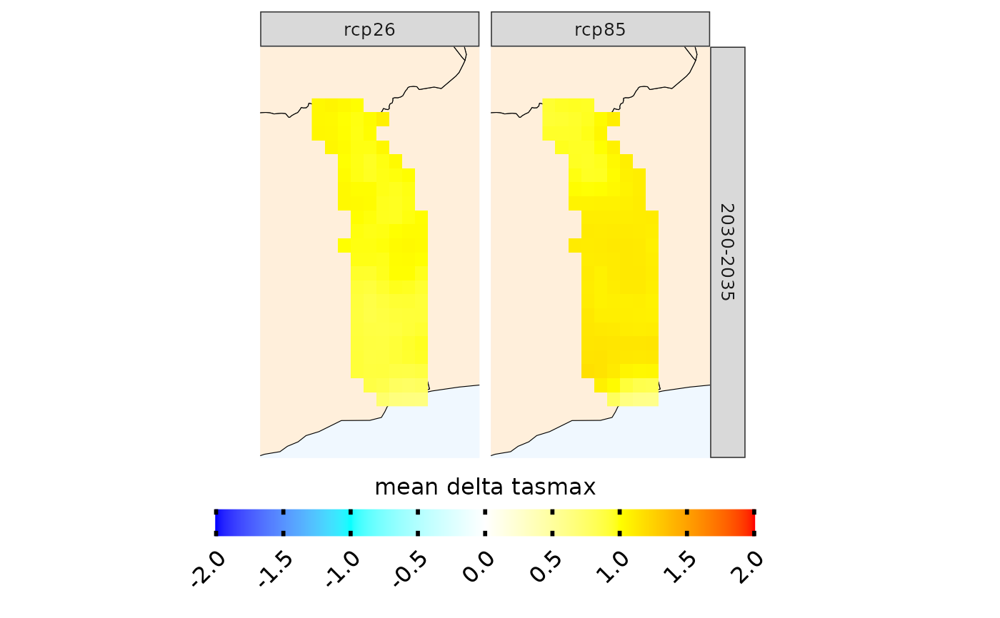

Calculation of climate change signal
climate_change_signal.RdAutomatically computes climate change signal
Usage
climate_change_signal(
data,
uppert = NULL,
lowert = NULL,
season,
consecutive = F,
duration = "max",
bias.correction = F,
n.sessions = 1
)Arguments
- data
output of load_data
- uppert
numeric of length=1, upper threshold
- lowert
numeric of length=1, lower threshold
- season
Numerical, seasons to select. For example, 1:12
- consecutive
logical, to use in conjunction with lowert or uppert
- duration
character, either "max" or "total"
- bias.correction
logical
- n.sessions
numeric, number of sessions to use, default is one. Parallelisation can be useful when multiple scenarios are used (RCPS, SSPs). However, note that parallelising will increase RAM usage
Value
list with SpatRasters. .[[1]] contains the SpatRasters for the ensemble mean. .[[2]] contains the SpatRasters for the ensemble sd and .[[3]] conins the SpatRasters for individual models
Examples
exmp <- suppressMessages(load_data(country = "Togo", variable="tasmax", years.hist=2000:2005, years.proj=2030:2035,
path.to.data = "CORDEX-CORE", domain="AFR-22"))
ccs_exmp <- climate_change_signal(exmp, season = 1:12)
#> ℹ climate change signal, season 1-2-3-4-5-6-7-8-9-10-11-12. Climate change signal for mean tasmax
#> ℹ Performing calculations
#> ✔ Performing calculations [2.1s]
#>
plotting(ccs_exmp, ensemble=T, plot_titles="mean delta tasmax", legend_range= c(-1.5, 1.5), palette=c("blue", "cyan", "white", "yellow", "red"), alpha=0.7)
#> ℹ Visualizing ensemble mean
#> ℹ Plotting
#> ✔ Plotting [31ms]
#>
